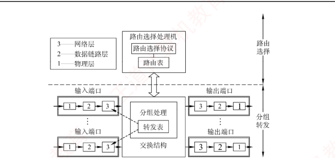
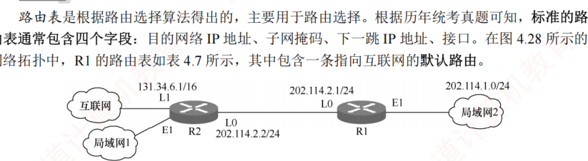

4.7 网络层设备
对应王道教材 4.7 节（教材 P214–P216）· 本节属于 408 考纲范围
4.7.1 冲突域和广播域 考点
这里的"域"表示冲突或广播在其中发生并传播的区域。
1．冲突域
冲突域是指连接到同一物理介质上的所有节点的集合，这些节点之间存在介质争用的现象。在 OSI 参考模型中，冲突域属于第 1 层（物理层）的概念。第 1 层设备（如集线器、中继器）仅复制和转发信号，不能划分冲突域，其所有端口属于同一个冲突域。第 2 层设备（如网桥、交换机）和第 3 层设备（如路由器）均可划分冲突域。
2．广播域
广播域是指能够接收到同一广播帧的所有节点的集合。也就是说，该集合中任一节点发送广播帧，其他能收到该帧的节点均属于此广播域。在 OSI 参考模型中，广播域属于第 2 层（数据链路层）的概念。第 1 层设备（如集线器）和第 2 层设备（如交换机）所连接的节点通常处于同一个广播域。路由器作为第 3 层设备，可以划分广播域，即连接不同的广播域。
通常所说的局域网（LAN）在逻辑上等同于一个广播域。路由器用于连接不同的 LAN，即分隔不同的广播域。
| 设备 | 工作层次 | 能否隔离冲突域 | 能否隔离广播域 | 说明 |
|---|---|---|---|---|
| 中继器 / 集线器 | 物理层（第 1 层） | 不能 | 不能 | 仅复制和转发信号，所有端口同属一个冲突域和一个广播域 |
| 网桥 / 交换机 | 数据链路层（第 2 层） | 能（每个端口一个冲突域） | 不能 | 转发广播帧，整个交换机仍是一个广播域 |
| 路由器 | 网络层（第 3 层） | 能 | 能 | 不转发广播帧，用于连接不同的 LAN（广播域） |
记忆口诀：层次越高，隔离能力越强——物理层设备什么也隔离不了；链路层设备只隔冲突域；网络层设备两者都能隔。因此能够抑制广播风暴（控制广播域扩散）的设备是路由器。
4.7.2 路由器的组成和功能 考点
路由器是一种具有多个输入/输出端口的专用计算机，其任务是互连不同的网络（异构网络）并转发分组。在多个逻辑网络（多个广播域）互连时必须使用路由器，可用于连接不同的 LAN、不同的 VLAN、不同的 WAN，或实现 LAN 与 WAN 的互连。
从结构上看，路由器由路由选择（控制平面）和分组转发（数据平面）两部分构成，如图 4.27 所示。而从模型角度看，路由器是工作在网络层的设备，其转发决策基于 IP 地址；为完成此功能，其端口还要具备物理层和数据链路层的处理能力。

1．路由选择部分（控制平面）
路由选择部分的核心是路由选择处理机，其任务是根据所选路由选择协议（如 RIP、OSPF）构建路由表，并周期性地与相邻路由器交换路由信息，以更新和维护路由表。
2．分组转发部分（数据平面）
分组转发部分由三部分组成：交换结构、一组输入端口和一组输出端口。
- 交换结构：路由器内部连接输入与输出端口的高速通路，负责根据转发表将输入端口的分组快速转发至合适的输出端口。交换结构本身就是一个"在路由器中的网络"；
- 端口：路由器的每个端口都包含物理层、数据链路层和网络层的处理模块。输入端口在物理层接收比特流，在数据链路层提取帧并剥离帧头和帧尾后，将分组送入网络层的处理模块。若收到的分组为普通数据分组，则根据目的 IP 地址查找转发表，经交换结构送至相应的输出端口；若为路由协议分组（如 RIP、OSPF 报文），则交由路由选择处理机处理。
路由器在端口处设有缓冲区，用于暂存待处理或待发送的分组，并可进行差错检测。若分组到达速率超过处理能力，则缓冲区可能溢出，导致后续分组被丢弃。需要说明的是，路由器的物理端口通常兼具输入和输出功能，图 4.27 中将输入/输出端口分开绘制，仅为方便理解。
4.7.3 路由表与分组转发 考点
路由表是根据路由选择算法得出的，主要用于路由选择。根据历年统考真题可知，标准的路由表通常包含四个字段：目的网络 IP 地址、子网掩码、下一跳 IP 地址、接口。在图 4.28 所示的网络拓扑中，R1 的路由表如表 4.7 所示，其中包含一条指向互联网的默认路由。

| 目的网络 IP 地址 | 子网掩码 | 下一跳 IP 地址 | 接口 |
|---|---|---|---|
| 202.114.1.0 | 255.255.255.0 | 直连 | E1 |
| 202.114.2.0 | 255.255.255.0 | 直连 | L0 |
| 202.114.3.0 | 255.255.255.0 | 202.114.2.2 | L0 |
| 0.0.0.0 | 0.0.0.0 | 202.114.2.2 | L0 |
转发表由路由表得出，其表项与路由表表项有直接的对应关系。但两者的设计目标不同：路由表应使路由计算优化，便于动态更新和拓扑变化处理；转发表应使高速查找优化，用于实际的数据转发过程。转发表通常包含目的网络前缀和对应的下一跳信息。转发表中可配置一条默认路由，当目的地址无法匹配任何明确表项时，分组将按默认路由转发。在实现方式上，路由表通常由软件维护；而转发表既可用软件实现，又可通过专用硬件。
"转发"是单个路由器根据转发表，将收到的 IP 数据报从合适端口送出的过程，属于数据平面操作；而"路由选择"是多个路由器协同工作，通过路由协议交换拓扑信息，运行路由算法动态生成路由表的过程，属于控制平面操作。
结合图 4.28 与表 4.7，路由器转发一个 IP 分组的流程如下：
- 从收到的 MAC 帧中剥离帧头和帧尾，提取出 IP 数据报，读出目的 IP 地址；
- 将路由表各表项的子网掩码与目的 IP 地址逐项做按位与运算，并与该表项的目的网络地址比较；
- 若与某表项匹配（如目的地址 202.114.3.5 与 202.114.3.0/24 匹配），则按该表项的下一跳 IP 地址和接口进行转发；下一跳为"直连"的表项表示目的网络直接连接在本路由器上，可直接交付；
- 若所有明确表项都不匹配，则按默认路由（目的网络 0.0.0.0，掩码 0.0.0.0）指定的下一跳转发；
- 确定下一跳 IP 地址后，通过 ARP 将其解析为下一跳路由器的 MAC 地址，重新封装成适合输出链路的新帧，从指定接口发出。若路由表中没有任何表项匹配且未设置默认路由，则丢弃该分组，并向源点发送 ICMP 差错报文。
这句话是指：路由器具备处理物理层、数据链路层和网络层协议的能力。具体而言：在物理层，路由器能接收和发送比特流；在数据链路层，它能识别帧结构、解析 MAC 地址，并完成帧的解封装与重新封装；在网络层，它能读取 IP 数据报首部，根据目的 IP 地址查询路由表，做出转发决策。当路由器转发数据时，会先解封装输入帧，提取出 IP 数据报，再根据下一跳接口重新封装成适合输出链路的新帧。正是这种能力，使路由器可以互连底层技术不同的网络（例如以太网与 PPP 链路）。这与仅工作在物理层的中继器或仅工作在数据链路层的交换机有本质区别。